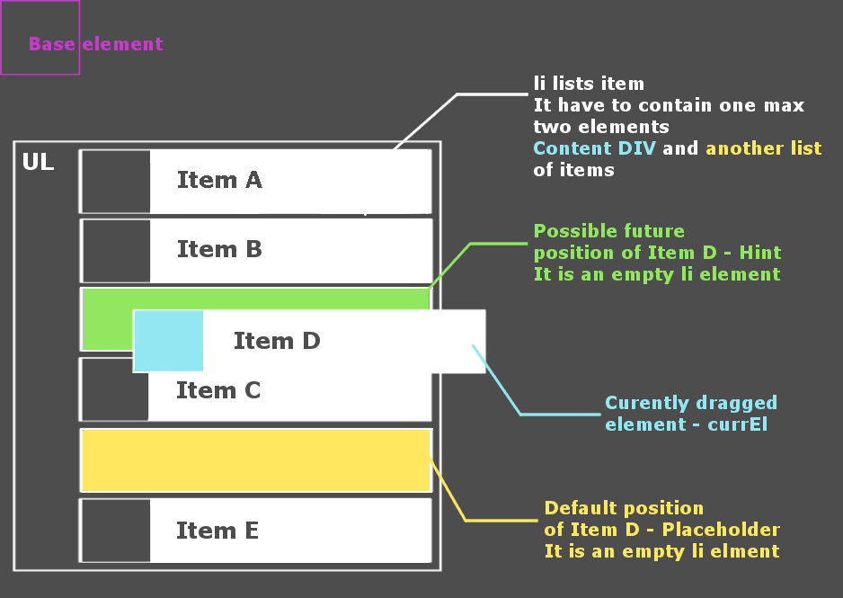
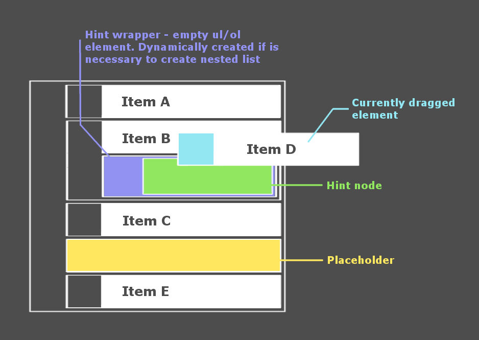

How does Sortable lists plugin work?.
$('.sortableLists').sortableLists( options );
You can sort an items of html lists by mouse. Create tree structures. Format all active items. You can define the isAlowed callback which determines if dragged item can be inserted into another. Also complete callback. Set the insert zone like a distance which determines if item will be inserted inside or outside of the active area, speed of autoscroll function and more. For better understanding look at the picture which describes all active elements in sortable lists plugin.
Look at the example and try it yourself.
-
Item a
-
Item b
-
Item b1
-
Item b2
-
Item b3
-
Item b4
-
Item b5
-
-
Item c - c block disallows inserting items from other blocks
-
Item c1
-
Item c2
-
Item c3
-
Item c4
-
Item c5
-
-
Item d
-
Item d1
-
Item d2
-
Item d3
-
Item d4
-
Item d5
-
-
Item e
-
Item f
Sortable lists also supports export methods. Look at the console log to see the result of buttons below.
To array To hierarchy To stringLists pattern
Note that li items can contains only one or max two direct children. Content div as a wrapper of li content and another list if item contains nested list. Like this:
<ul>
<li>
<div>Whatever you want here</div>
<ul>
<li><div>Nested list item</div></li>
<li><div>Another item</div></li>
</ul>
</li>
</ul>
Css pattern
If you format li elements this way
#myList li { background-color:#ddf, padding-left:50px }
you have to add this selector to css file.
$myList li, #sortableListsBase li { background-color:#ddf, padding-left:50px }
Every dragged item is appended to the base element. It ensures smooth dragging and scrolling. For more information about base element look at the picture below and at the Base element description.
All settings are placed in object which is the only parameter of .sortableLists() function.
$('.sortableLists').sortableLists( options );
That's all. Everything else is optonal.
This pictures shows you how it works inside. Click to show.
 Active elements
Base element
Most important element. Every dragged element is appended to the base element while dragging. Sortable lists plugin adds this element in to the body at the background. It is the ul/ol element with css properties: position:absolute; top:0; left:0. This element is the base for calculation the position of dragged element. This ensures smooth movement while dragging and scrolling. Another plugins have big problems with it.
Currently dragged element
Is dragged element of course. You can have a little problem with the formatting this element. It caused the fact that dragged element is the child of the base element during the dragging. Look at the Css pattern how to solve it. Current element has class - sortableListsCurrent which helps you to format the item. You can do it also through the options object by currElClass or currElCss properties. Note that classes sortableListsCurrent and currElClass will be removed after the dragging but currElCss not.
var options = {
// Like a css class name. Class will be removed after drop.
currElClass: 'currElemClass',
// or like a jQuery css object. Note that css object settings can't be removed
currElCss: {'background-color':'green', 'color':'#fff'}
}
Placeholder
Sortable lists plugin generates this li element at the background. Element holds the default position of dragged item while dragging. Element has id - sortableListsPlaceholder. You can also set the css via placeholderClass or placeholderCss in options object.
var options = {
placeholderClass: 'placeholderClass',
// or like a jQuery css object
placeholderCss: {'background-color':'yellow'}
}
Hint
This element generates the plugin at the background. Element shows the possible future position of dragged item. You can set the css via hintClass or hintCss in options object.
var options = {
hintClass: 'hintClass',
// or like a jQuery css object
hintCss: {'background-color':'green', 'border':'1px dashed white'}
}
Hint wrapper
Sortable lists plugin generates this element if is necessary to wrap the future position by ul/ol. Default type of wrapper is UL. You can change it in settings object by listSelector property. The hintWrapperClass is removed after the item is inserted inside the list. So the final css of the wrapper is determined by listsClass property of options object or by default. Look at the next paragraph.
var options = {
listSelector: 'ol',
hintWrapperClass: 'hintClass',
// or like a jQuery css object
hintWrapperCss: {'background-color':'green', 'border':'1px dashed white'}
}
Another settings
List selector, list class
Sortable lists plugin needs to know which type of lists(ul/ol) you want to use if is necessary to wrap item by ul/ol. Plugin also does not know which classes do you use to format your lists so you have to set listsClass or listsCss property of settings object.
var options = {
listSelector: 'ol',
listsClass: 'listsClass',
// or like a jQuery css object
listsCss: {'background-color':'silver', 'border':'1px solid white'}
}
Insert zone
This property defines the distance which determines if item will be inserted outside(before/after) or inside of another item.
var options = {
insertZone: 50
}
Autoscroll speed
Yes you are right. This property defines the speed of auto scrolling.
var options = {
scroll: 20
}
Open/close function
This option enables you to hide/show nested lists. Plugin prepend the span element to the content div of items with nested lists. You can style this element through the opener object of options. Look at the example code below. At first you must activate the open/close function. Next step is setting of url for open/close image on the background of the span. The last step are styles as jquery css object or class.
var options = {
opener: {
active: true,
close: './imgs/Remove2.png',
open: './imgs/Add2.png',
css: {
'display': 'inline-block', // Default value
'float': 'left', // Default value
'width': '18px',
'height': '18px',
'margin-left': '-35px',
'margin-right': '5px',
'background-position': 'center center', // Default value
'background-repeat': 'no-repeat' // Default value
},
// or like a class. Note that class can not rewrite default values. To rewrite defaults you have to do it through css object.
class: 'yourClassName'
}
}
Default behaviour is to close all nested lists on page load. If you want to show some nested lists you have to add "sortableListsOpen" class to the parent li element of nested list.
<ul>
<li class="sortableListsOpen">
<div>Content div</div>
<ul>
<li><div>Nested list item</div></li>
<li><div>Another item</div></li>
</ul>
</li>
</ul>
Callback isAllowed
isAllowed is anonymous function which determines if item can be inserted to the active area. It takes three arguments: currEl == currently dragged el., hint == hint, target == li wrapper of hint element. Look at the code of isAllowed from first example of the page. It disallows you to insert item to the "c" module if it is not from "c" module by default.
var options = {
isAllowed: function(currEl, hint, target)
{
if(hint.parents('li').first().data('module') === 'c' && currEl.data('module') !== 'c')
{
hint.css('background-color', '#ff9999');
return false;
}
else
{
hint.css('background-color', '#99ff99');
return true;
}
}
}
Callback complete
Is called after the drop. Takes one argument currEl == currently dragged element.
var options = {
complete: function(currEl)
{
// Whatever you need to do after the drop
}
}
To array, to hierarchy, to string
Sortable lists also support this three function. They do what they say - returns the representation of the lists as array, tree or string. Look at the first example on the page. They are implemented as plugins so you can call it this way:
$('#toArrBtn').on('click', function(){ console.log($('#sTree2').sortableListsToArray()); });
$('#toHierBtn').on('click', function() { console.log($('#sTree2').sortableListsToHierarchy()); });
$('#toStrBtn').on('click', function() { console.log($('#sTree2').sortableListsToString()); });
Do not do this:
Do not use construction where ul with margin top is direct child of body - <body><ul style="margin-top:XYpx">. Margin-top breaks the position of dragged element.